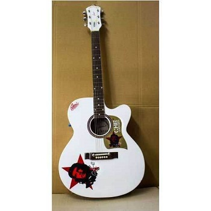

Home Guitar Lute Cello Piano Training

The guitar is a string instrument which is played by plucking the strings. The main parts of a guitar are the body, the fretboard, the headstock and the strings. Guitars are usually made from wood or plastic. Their strings are made of steel or nylon.
It is typically played with both hands by strumming or plucking the strings with either a guitar pick or the fingers/fingernails of one hand, while simultaneously fretting (pressing the strings against the frets) with the fingers of the other hand.
The sound of the vibrating strings is projected either acoustically, by means of the hollow chamber of the guitar